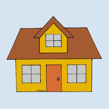

Es el más famoso y se trata de un caza monoplaza británico desarrollado por Hawker Aircraft en la década de 1930. Fue una pieza clave para la Real Fuerza Aérea (RAF) durante la Segunda Guerra Mundial, especialmente en la Batalla de Inglaterra (1940), donde derribó aproximadamente el 60% de los aviones enemigos. . Está construido con una estructura mixta de metal y tela, lo que lo hacía resistente y fácil de reparar, a diferencia de otros cazas más complejos.
El Hurricane nació de la necesidad de modernizar la Royal Air Force (RAF), que aún dependía de biplanos. Fue diseñado por Sydney Camm y voló por primera vez en noviembre de 1935. Innovación: Fue el primer caza monoplano de la RAF capaz de superar las 300 mph (480 km/h). Diseño híbrido: A diferencia del Spitfire (totalmente de metal), el Hurricane usaba una estructura de tubos de acero recubierta de tela en la parte trasera. Esto permitió que las fábricas que hacían biplanos pudieran producirlo rápidamente sin cambiar toda su maquinaria.
El Hawker Hurricane fue el pilar fundamental de la RAF en la Batalla de Inglaterra, donde su estabilidad y resistencia le permitieron derribar el 60% de los aviones alemanes, concentrándose principalmente en la destrucción de bombarderos. Tras este éxito, demostró una versatilidad única al participar en la defensa de Malta y en el Frente Oriental asistiendo a la Unión Soviética, además de convertirse en un letal cazacarros en el Norte de África durante batallas como El Alamein. Su historial de combate se extendió hasta el Lejano Oriente, donde operó en condiciones selváticas extremas, consolidándose como el avión británico con mayor presencia global en los momentos más críticos de la guerra.
|  |
 |
 |
 |
 |
 |